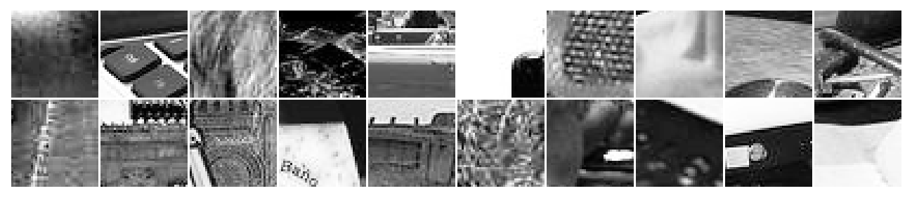
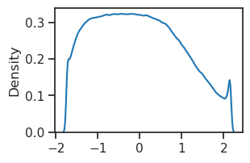
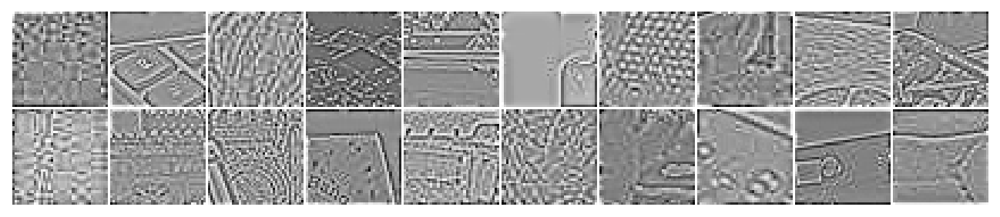

(01) ImageNet40: crop, process, save#
device = cuda:2
Motivation:
device_idx = 3
device = f'cuda:{device_idx}'
print(f"device: {device} ——— host: {os.uname().nodename}")
device: cuda:3 ——— host: mach
Load and visualize#
from mcfe.common.dataset import make_dataset
from mcfe.figures.imgs import plot_weights
inds = np.random.randint(50_000, size=20)
raw#
_, vld, _ = make_dataset('ImageNet40', skip_trn=True, to_tensor_dataset=False)
vld = vld[0]
vld.shape
torch.Size([50000, 1, 40, 40])
plot_weights(vld[inds]);

sns.kdeplot(vld.ravel())
plt.show()

whitened#
_, vld, _ = make_dataset('ImageNet40-wht', skip_trn=True, to_tensor_dataset=False)
vld = vld[0]
vld.shape
torch.Size([50000, 1, 40, 40])
plot_weights(vld[inds]);

sns.kdeplot(vld.ravel())
plt.show()
Load, crop, process, save#
"""
Process ImageNet ILSVRC2012 → 40×40 grayscale center crops.
Steps:
1. Load each image, convert to grayscale
2. Center-crop 40×40
3. Collect into arrays
4. Z-score using training-set statistics
5. Save to /home/hadi/Datasets/ImageNet/crop40/
Output shape: (N, 1, 40, 40), float32
"""
from pathlib import Path
from PIL import Image
SRC_DIR = Path.home() / 'Datasets' / 'ImageNet' / 'ILSVRC2012'
DST_DIR = Path.home() / 'Datasets' / 'ImageNet' / 'crop40' / 'raw'
CROP_SIZE = 40
def center_crop_grey(img_path: str, crop_size: int = CROP_SIZE):
"""Load image, convert to greyscale, center-crop."""
try:
img = Image.open(img_path).convert('L')
except Exception as e:
return None
w, h = img.size
if w < crop_size or h < crop_size:
return None
left = (w - crop_size) // 2
top = (h - crop_size) // 2
img = img.crop((left, top, left + crop_size, top + crop_size))
# (crop_size, crop_size), uint8
return np.array(img, dtype=np.float32)
def collect_split(split_dir: Path, desc: str = ''):
"""Walk class folders, crop each image, return (N, 40, 40) float32."""
arrays = []
# gather all image paths first for a proper progress bar
paths = []
for class_dir in sorted(split_dir.iterdir()):
if not class_dir.is_dir():
continue
for img_file in sorted(class_dir.iterdir()):
suffix = img_file.suffix.lower()
if suffix in ('.jpeg', '.jpg', '.png', '.webp', '.JPEG'):
paths.append(img_file)
print(f"[{desc}] Found {len(paths)} images")
skipped = 0
for p in tqdm(paths, desc=desc):
patch = center_crop_grey(str(p))
if patch is None:
skipped += 1
continue
arrays.append(patch)
if skipped:
print(f" skipped {skipped} images (too small or corrupt)")
# (N, 40, 40)
return np.stack(arrays, axis=0)
def main():
# --- collect raw crops ---
trn_dir = SRC_DIR / 'train'
val_dir = SRC_DIR / 'validation'
assert trn_dir.is_dir(), f"not found: {trn_dir}"
assert val_dir.is_dir(), f"not found: {val_dir}"
x_trn = collect_split(trn_dir, desc='train')
x_vld = collect_split(val_dir, desc='validation')
print(f"raw train: {x_trn.shape}, validation: {x_vld.shape}")
# --- z-score normalization (stats from train only) ---
mu = x_trn.mean()
sd = x_trn.std()
print(f"train pixel stats: mean={mu:.4f}, std={sd:.4f}")
x_trn = (x_trn - mu) / sd
x_vld = (x_vld - mu) / sd
# --- reshape to (N, 1, 40, 40) ---
x_trn = x_trn[:, None, :, :]
x_vld = x_vld[:, None, :, :]
print(f"final train: {x_trn.shape}, validation: {x_vld.shape}")
print(f"train range: [{x_trn.min():.3f}, {x_trn.max():.3f}]")
print(f"validation range: [{x_vld.min():.3f}, {x_vld.max():.3f}]")
# --- save ---
DST_DIR.mkdir(parents=True, exist_ok=True)
np.save(DST_DIR / 'x_trn.npy', x_trn)
np.save(DST_DIR / 'x_vld.npy', x_vld)
# also save normalization stats for reproducibility
np.savez(DST_DIR / 'norm_stats.npz', mean=mu, std=sd)
print(f"saved to {DST_DIR}")
%%time
main()
Found 1281167 images
skipped 173 images (too small or corrupt)
Found 50000 images
raw train: (1280994, 40, 40), validation: (50000, 40, 40)
train pixel stats: mean=113.6919, std=65.3347
final train: (1280994, 1, 40, 40), val: (50000, 1, 40, 40)
train range: [-1.740, 2.163]
validation range: [-1.740, 2.163]
saved to /home/hadi/Datasets/ImageNet/crop40
CPU times: user 57min 56s, sys: 1min 54s, total: 59min 51s
Wall time: 1h 3min
Apply whitening#
"""
Apply whitening + local contrast normalization + z-score
to the raw ImageNet 40×40 crops.
Reads from: ~/Datasets/ImageNet/crop40/raw/
Writes to: ~/Datasets/ImageNet/crop40/wht/
Uses do_process() from mcfe.utils.imgproc, which applies:
1. Olshausen & Field whitening filter
2. Jarrett et al. local contrast normalization
3. Per-image spatial z-score
"""
from pathlib import Path
from mcfe.utils.imgproc import do_process
BASE = Path.home() / 'Datasets' / 'ImageNet' / 'crop40'
RAW_DIR = BASE / 'raw'
WHT_DIR = BASE / 'wht'
# batch size for processing (adjust based on GPU memory)
BATCH_SIZE = 2000
def process_split(x_raw: np.ndarray, name: str) -> np.ndarray:
"""Apply whitening pipeline in batches, return (N, 1, 40, 40) float32."""
x = torch.from_numpy(x_raw).float().to(device)
n = x.shape[0]
results = []
for i in tqdm(range(0, n, BATCH_SIZE)):
batch = x[i:i + BATCH_SIZE]
# do_process returns (whitened, wht+lcn, wht+lcn+zscore)
# crop_size=0: keep 40×40, no border cropping
_, _, x_wht = do_process(
stim=batch,
device=device,
crop_size=0,
kws_whiten=dict(f_0=0.5, n=4, batched=True),
kws_contrast=dict(kernel_size=9, sigma=0.5, batched=True),
)
results.append(x_wht.cpu())
# print(f" {name}: {min(i + BATCH_SIZE, n)}/{n}")
out = torch.cat(results).numpy()
return out
def apply_whitening():
WHT_DIR.mkdir(parents=True, exist_ok=True)
for name in ['x_trn', 'x_vld']:
path_in = RAW_DIR / f'{name}.npy'
path_out = WHT_DIR / f'{name}.npy'
print(f"loading {path_in}")
x_raw = np.load(path_in)
print(f" shape: {x_raw.shape}, range: [{x_raw.min():.3f}, {x_raw.max():.3f}]")
x_wht = process_split(x_raw, name)
print(f" processed range: [{x_wht.min():.3f}, {x_wht.max():.3f}]")
np.save(path_out, x_wht)
print(f" saved {path_out}\n")
print("done")
apply_whitening()